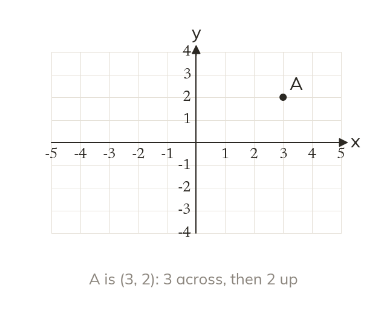
Across, then up or down
A coordinate pair (x, y) gives the horizontal position first, then the vertical one. Both are measured from the origin (0, 0), where the axes cross.
Every map, screen and game places points with two numbers. Today you use coordinates in all four quadrants and meet your first lines with an equation.
Work down the page at your own pace. Write every answer in your book first, then click to check it.
Read each card, then follow the worked examples one step at a time.

A coordinate pair (x, y) gives the horizontal position first, then the vertical one. Both are measured from the origin (0, 0), where the axes cross.
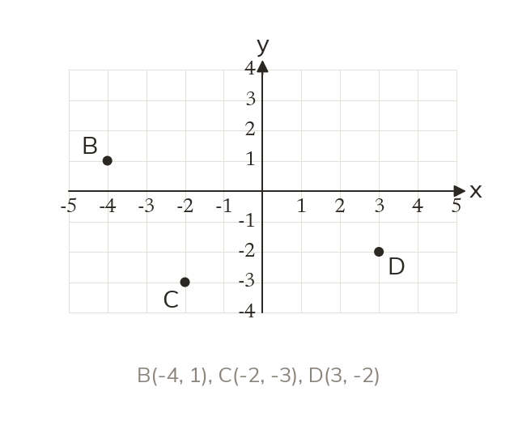
A negative x-coordinate lies left of the origin. A negative y-coordinate lies below it. The axes split the grid into four quadrants.
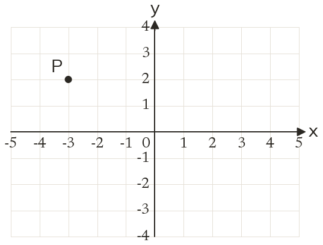
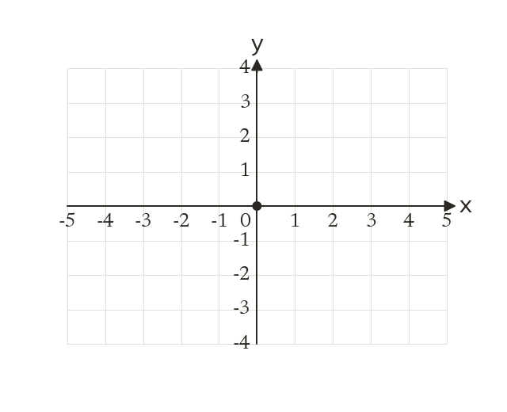
Pick an answer. If it's wrong, the feedback tells you which mistake it was.
Printable worksheet — the questions with room to work.


Read each card, then follow the worked examples one step at a time.
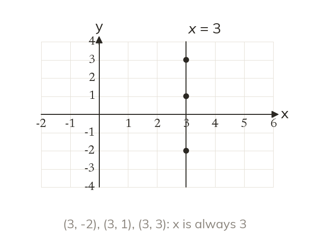
Every point on a vertical line has the same x-coordinate. Its equation is x = that number. The y-axis is x = 0.
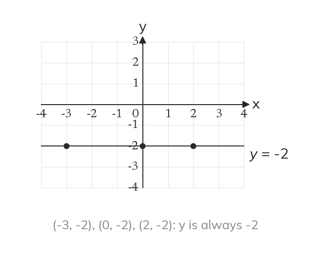
Every point on a horizontal line has the same y-coordinate. Its equation is y = that number. The x-axis is y = 0.
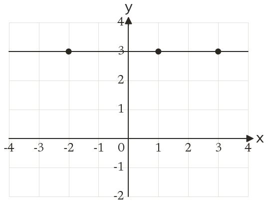
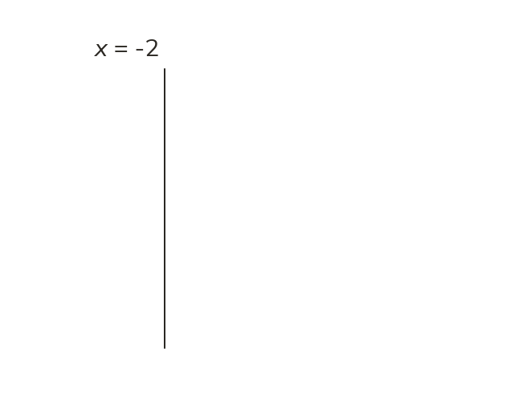
Pick an answer. If it's wrong, the feedback tells you which mistake it was.
Printable worksheet — the questions with room to work.
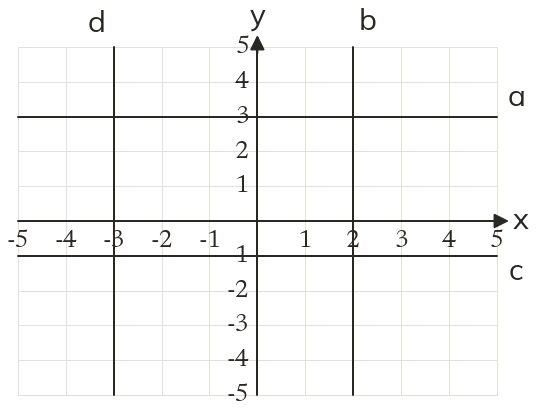
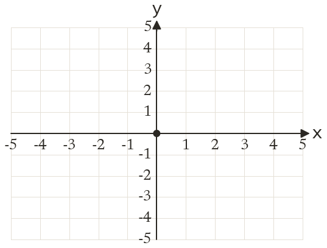
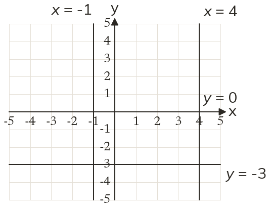
Finished? Next lesson: 7.15.5 Coordinate Problem Solving.
Log in, then search for a code to practise that skill.
Videos, worksheets and more on each part of this lesson.